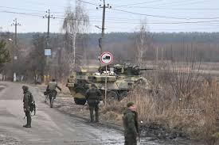

La "operación militar especial" que desplegó Rusia en Ucrania marca una nueva  etapa en el conflicto entre estos dos países, así como la relación entre Moscú y las potencias occidentales.
El presidente ruso, Vladimir Putin, justificó los ataques asegurando que busca proteger del ejército ucraniano a las regiones separatistas en el este del país, y advirtió con consecuencias "inmediatas" si alguien intenta enfrentarse a Rusia.
El mandatario de Ucrania, Volodymyr Zelensky, denunció ataques con misiles de crucero desde territorio ruso y anunció la ruptura de las relaciones diplomáticas con el gobierno de Putin.
La Unión Europea describió la situación como "uno de los momentos más oscuros en Europa desde la Segunda Guerra Mundial" y prometió sanciones "masivas" contra Rusia.
El día nueve en el ataque de Rusia a Ucrania comenzó con las tropas rusas tomando la central nuclear ucraniana de Zaporiyia, la mayor de Europa, así lo informó el regulador nuclear estatal de Ucrania, quien agregó que el personal de la planta controla el estado de los bloques y garantiza su correcto funcionamiento. Posteriormente, este viernes no tuvo mayor actividad de ataques y así se fue el noveno día de guerra.